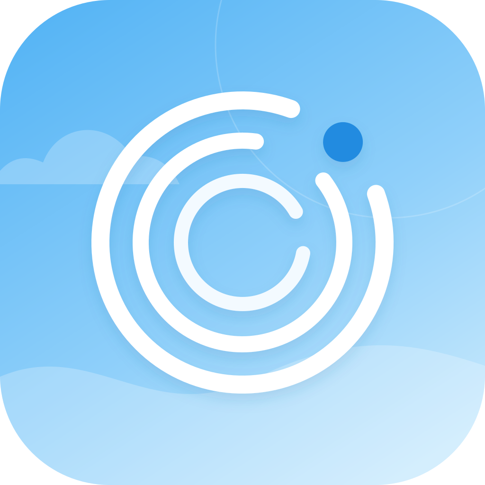

岁岁时光 · 正式品牌图标

云光日历
蓝天与白云，折页与完成。
延续移动端启动画面的轻盈蓝白，让事项与时间规划拥有统一的视觉标识。


桌面 · 浅色背景
16 px
32 px
48 px
桌面 · 深色背景
应用内标识、网页图标与 macOS / Windows 安装图标采用同一套品牌源图。
安卓 · 系统形状预览
此处为形状示意；安装资源另有分层自适应图标，系统负责裁切。
品牌源文件：桌面端品牌 SVG。安卓前景保留日历与完成勾，背景保留蓝天白云；Android 12 启动标识沿用同一日历轮廓。历史候选稿保留用于设计记录。
本页可本地直接打开；GitHub 仓库首页通过 README 展示图标，无需外部图片服务。